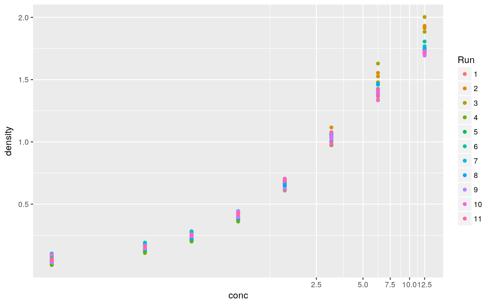

Implements drc nonlinear functions into the nlme framework for mixed effects dose-response modeling.
medrm(form, curveid=NULL, data, fct, random, correlation = NULL, weights = NULL, control = NULL, start = NULL, REML=FALSE)
| form | Formula describing the dose-response relationship |
|---|---|
| curveid | Formula with parameter names on the left hand side (divided by +) and a column name in data, denoting a factor, to estimate separate parameters per factor-level. If NULL only fixed effects for a single curve will be estimated. |
| data | a data.frame object |
| fct | a function of the drc package |
| random | a list or one-sided formula describing the random effects |
| correlation | additional corClasses object |
| weights | additional varClasses object |
| control | list with nlme control arguments |
| start | optional list with initial values for the fixed components. If NULL the initial values will be found automatically. |
| REML | logical value. If TRUE the model is fit by maximizing the restricted log-likelihood, if FALSE log-likelihood is maximized. |
An object of class medrc
An application of medrm is shown on the help pages of data broccoli. EDx and selectivity indices can be calculated with functions ED and EDcomp. Model-averaged ED can be computed by function mmaED.
Marginal EDx and corresponding function are implemented in functions EDmarg, using numerical integration conditional on the etimated variance components.
library(nlme) data(DNase) DNase$Run <- factor(DNase$Run, levels=1:11) ggplot(DNase, aes(y=density, x=conc, colour=Run)) + geom_point() + coord_trans(x="log")# NOT RUN { ############# # fit a 5-parameter log-logistic model # with random asymptotes, steepness and inflection point location ## starting values need to be provided: # estimate a set of parameters for each Run mf <- glsdrm(density ~ conc, curveid=b + c + d + e + f ~ Run, fct=LL.5(), data=DNase) # curve specific difference to the parameter average cmat <- matrix(coefficients(mf), ncol=5) m <- apply(cmat, 2, mean) # fixed effect starting values names(m) <- letters[2:6] rmat <- t(apply(cmat, 1, function(x) x-m)) # random effect starting values rownames(rmat) <- levels(DNase$Run) colnames(rmat) <- letters[2:6] # mixed model fit mm <- medrm(density ~ conc, fct=LL.5(), data=DNase, random=b + c + d + e ~ 1 | Run, start=list(fixed=m[c("b","c","d","e","f")], Run=rmat)) # medrc methods: plot(mm, logx=TRUE, ndose=100, ranef=TRUE) print(mm) VarCorr(mm) ranef(mm) coef(mm) vcov(mm) ### effective dose estimation ED25, ED50, ED75 # based on the fixed effect estimates # conditional on random effects of 0 ED(mm, c(25, 50, 75), interval="tfls") # predictions for Run 2 ndata <- data.frame(conc=exp(seq(log(0.1),log(13), length=10)), Run="2") predict(mm, newdata=ndata) ############################## # fitting a reduced model # without random slope () mmr <- medrm(density ~ conc, fct=LL.5(), data=DNase, random=c + d + e ~ 1 | Run, start=list(fixed=m[c("b","c","d","e","f")], Run=rmat)) # estimating marginal ED25, ED50, ED75 # (by numerical integration conditional on estimated variance-components) EDmarg(mmr, c(25, 50, 75), interval="tfls") # comparing to Run-specific ED ED(mmr, c(25, 50, 75), interval="tfls") # marginal prediction ndata <- data.frame(conc=exp(seq(log(0.1),log(13), length=10))) predict(mmr, type="marginal", newdata=ndata) ############# ############# # fit a 4-parameter Weibull model # with random asymptotes and inflection point location ## starting values: mf <- glsdrm(density ~ conc, curveid=b + c + d + e ~ Run, fct=W1.4(), data=DNase) cmat <- matrix(coefficients(mf), ncol=4) m <- apply(cmat, 2, mean) # fixed effect starting values names(m) <- letters[2:5] rmat <- t(apply(cmat, 1, function(x) x-m)) # random effect starting values rownames(rmat) <- levels(DNase$Run) colnames(rmat) <- letters[2:5] # mixed model fit mmw <- medrm(density ~ conc, fct=W1.4(), data=DNase, random=c + d + e ~ 1 | Run, start=list(fixed=m[c("b","c","d","e")], Run=rmat)) plot(mmw, logx=TRUE, ndose=100, ranef=TRUE) # AIC comparison of LL.5 and W1.4 model AIC(mm, mmw) # }